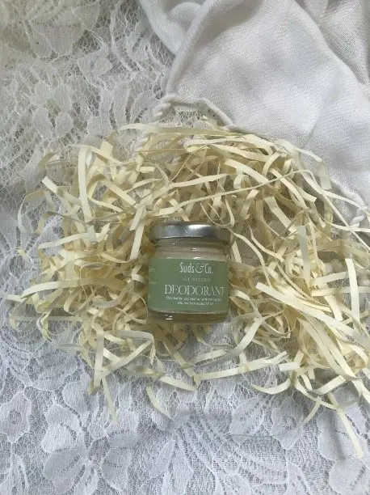

Tea Infusions have been sipped for centuries. This has not only been done for enjoyment, but also specifically used as healing teas. The ingredients extracted from various parts of the bark, stem, root, leaf or bud seem to have a remedy for just about any ailment. Apart from healthy tonics, tea is also being used to create products all around the house. Some of these items have even been marketed as luxury products which has enhanced the brand equity of tea.
Natural Hand made Deodrant

Natural deodorant composed of simple ingredients including beeswax, baking soda, virgin coconut oil and shea butter — these naturally fights odor and keep your skin moisturized at the same time.
Have you tried our all natural deodorant with antimicrobial and odor-eliminating properties that leave you feeling fresh throughout the day. The recipe uses the power of baking soda for odor absorption, virgin coconut oil and shea butter to moisturize skin, , arrowroot powder to keep you dry and essential oils such as lavender, tea tree, lemongrass peppermint and/or orange for that added fragrance. These ingredients neutralize bad-smelling bacteria, and powders help absorb excess wetness. They’re recognizable, generally regarded as safe. Isn’t it comforting to know what you’re putting on your body?
ingredients
Virgin Coconut oil
Shea Butte
Arrowroot powder
Baking Soda
Bees Wax
Lemongrass Essential Oil
Tea Tree Essentials oil
Rs.1000.00
Tea Tree Oil
Tea tree oil has been used as a traditional medicine for many centuries. The leaves of the tea tree plant are used to extract the oil. Moreover, people around the world use tea tree oil for hair as it helps to keep the hair healthy.This is broadly accessible as a 100% undiluted or perfect oil. Mixed and impure applications are there, extending from 5–half quality in items intended for skin purposes.
Why is it so valuable medicine?
It consists of several compounds. It has terpinene-4-ol and is responsible for killing certain bacteria, viruses, and fungi. It also increases your white blood cells’ activity so as it can fight against germs in your body. It is inhaled to treat coughs and colds or applied directly to the skin for healing.
Rs.1800.00
LANBENA Tea Tree Oil Soap
Soap made out of tea is increasing in popularity around the world. It is gifted to friends and family in beautiful hampers which are appreciated for the the health benefits and the aesthetic appeal. These soaps are usually handcrafted, using cold process technique and cured for at least a month.
The 24K Tea Tree Oil Handmade Soap contains tea tree oil with antibacterial and anti-inflammatory properties. The tea tree oil can quickly penetrate through the hair follicles to repair the skin and treat acne and blackheads, making it suitable for oily and acne-prone skin.
Washing your face after soaking the foaming net with warm water. The foam containing essential oil can penetrate into your pores to clean and moisturize your skin. The more bubbles, the better result you will get. A free foaming net with one soap.